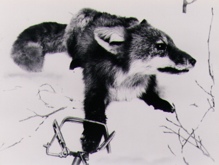
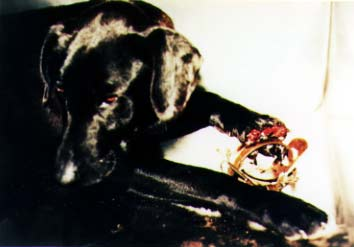
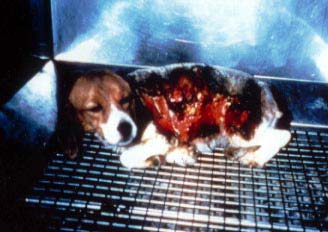
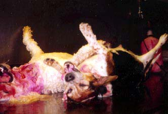

Pain for Profit
The fur ads we see in magazines and commercials portray fur coats as a symbol of elegance. But
these ads fail to show how the original owners of these coats met their gruesome deaths.
Approximately 3.5 million furbearing animals - raccoons, coyotes, bobcats, lynxes,
opossums, nutria, beavers, muskrats, otters, and others - are killed each year by trappers in the
United States. Another 2.7 million animals are raised on fur "farms." Despite the fur
industry's attempts to downplay the role of trapping in fur "production," it is estimated that
more than half of all fur garments come from trapped animals.

Jaws and Paws
There are various types of traps, including snares, box traps, and cage traps, but the leghold
trap is the most widely used. This simple but barbaric device has been banned in 63
countries, as well as in Florida, Rhode Island, New Jersey, and Arizona. The European
Union plans to ban the importation of furs from countries that use leghold traps on December
31, 1995. However, the U.S. government is lobbying to weaken this regulation.

When an animal steps on the leghold trap spring, the trap's jaws slam on the animal's limb. Dr.
Robert E. Cape explains that "if the trap is properly anchored, the captured animal will
struggle to get loose, mutilating the foot and causing deep, painful lacerations. Or the
animal will attempt escape by chewing or twisting off the trapped extremity. 10 to 12
hours after being captured, the animal is still in pain." After a prolonged time,
he explains, trapped animals "will suffer from exhaustion, since they expend such a great
amount ofenergy in attempting to escape. With exhaustion, the animal suffers from exposure,
frostbite, shock, and eventually death."
It is estimated that up to one out of every four trapped animals escapes by chewing off his or
her own foot. If these animals do not die from blood loss, infection, or gangrene, they
will probably be killed by predators, hunters, or other traps. Victims of water-set
traps, including beavers and muskrats, can take up to 20 agonizing minutes to drown.

Because many trapped animals are mutilated by predators before trappers return to claim their
bodies, pole traps are often used. A pole trap is a form of leghold trap that is set in a tree or
on a pole. Animals caught in these traps are hoisted into the air and left to hang by the
caught appendage until they die or the trapper arrives to kill them.
The Fatal Finale
For animals who stay alive in the traps, further torture awaits them when the trappers return.
State regulations on how often trappers must check their traps vary from 24 hours to
one week, and four states have no regulations at all. Most state laws do not regulate the
methods of slaughter for animals found alive in traps. To avoid damaging the pelt,
trappers usually beat or stomp their victims to death. A common stomping method is "for the
trapper to stand on the animal's rib cage, concentrating his weight near the heart. He then
reaches down, takes the animal's hind legs in his hands, and yanks."

"Accidental" Victims
Every year hundreds of thousands of dogs, cats, birds, and other animals, including
endangered species, are "accidentally" crippled or killed by traps. Trappers call these animals
"trash kills" because they have no economic value.
MURDERS